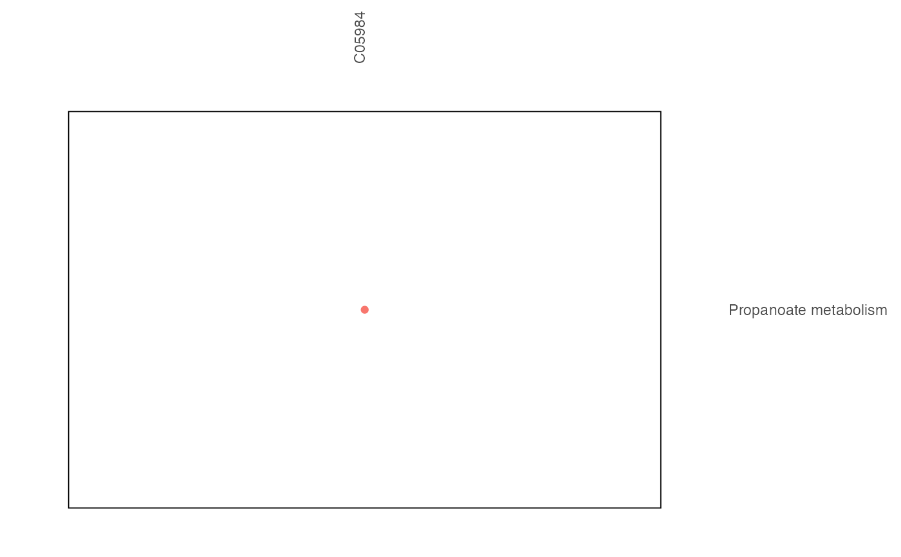

pathway analysis and visualization
xgr.Rdpathway analysis and visualization
Usage
xgr(
metabolites_keggid,
database,
p_cutoff = 0.05,
noverlap_cutoff = 0,
test = c("hypergeo", "fisher", "binomial")
)Arguments
- metabolites_keggid
the metabolites's keggid
- database
the database used
- p_cutoff
p_cutoff used to declare the significant terms. By default, it is set to 0.05
- noverlap_cutoff
noverlap_cutoff used to declare the number of overlap. By default, it is set to 0
- test
the test statistic used. It can be "fisher" for using fisher's exact test, "hypergeo" for using hypergeometric test, or "binomial" for using binomial test. Fisher's exact test is to test the independence between gene group (genes belonging to a group or not) and gene annotation (genes annotated by a term or not), and thus compare sampling to the left part of background (after sampling without replacement). Hypergeometric test is to sample at random (without replacement) from the background containing annotated and non-annotated genes, and thus compare sampling to background. Unlike hypergeometric test, binomial test is to sample at random (with replacement) from the background with the constant probability. In terms of the ease of finding the significance, they are in order: hypergeometric test > fisher's exact test > binomial test. In other words, in terms of the calculated p-value, hypergeometric test < fisher's exact test < binomial test
Examples
library(dplyr)
database <- PathwayExtendData %>%
dplyr::filter(type=="metabolite") %>%
dplyr::select(name,kegg_pathwayname,kegg_category,type)
kegg_id_need <- c("C05984","C02494")
xgr_result <- xgr(kegg_id_need,database,p_cutoff=1.1,noverlap_cutoff=0)
#> Start at 2024-09-06 16:37:25
#>
#> Warning: one argument not used by format '
#> #######################################################'
#>
#> #######################################################
#> 'xEnricher' is being called (2024-09-06 16:37:25):
#> Warning: one argument not used by format '#######################################################'
#> #######################################################
#> First, generate a subgraph induced (via 'all_paths' mode) by the annotation data (2024-09-06 16:37:25) ...
#> Next, prepare enrichment analysis (2024-09-06 16:37:25) ...
#> There are 1 genes/SNPs of interest tested against 3047 genes/SNPs as the background (annotatable only? TRUE) (2024-09-06 16:37:25)
#> Third, perform enrichment analysis using 'hypergeo' test (2024-09-06 16:37:25) ...
#> There are 81 terms being used, each restricted within [1,2000] annotations
#> Last, adjust the p-values for 81 terms (with 0 minimum overlaps) using the BH method (2024-09-06 16:37:25) ...
#> Warning: one argument not used by format '#######################################################'
#> #######################################################
#> 'xEnricher' has been finished (2024-09-06 16:37:25)!
#> Warning: one argument not used by format '#######################################################
#> '
#> #######################################################
#>
#> End at 2024-09-06 16:37:25
#> Runtime in total (xEnricherYours): 0 secs
result <- xgr(kegg_id_need,PathwayExtendData,p_cutoff=1.1,noverlap_cutoff= 0)
#> Start at 2024-09-06 16:37:25
#>
#> Warning: one argument not used by format '
#> #######################################################'
#>
#> #######################################################
#> 'xEnricher' is being called (2024-09-06 16:37:25):
#> Warning: one argument not used by format '#######################################################'
#> #######################################################
#> First, generate a subgraph induced (via 'all_paths' mode) by the annotation data (2024-09-06 16:37:25) ...
#> Next, prepare enrichment analysis (2024-09-06 16:37:26) ...
#> Warning: one argument not used by format '#######################################################'
#> #######################################################
#> 'xEnricher' has been finished (2024-09-06 16:37:26)!
#> Warning: one argument not used by format '#######################################################
#> '
#> #######################################################
#>
#> End at 2024-09-06 16:37:26
#> Runtime in total (xEnricherYours): 1 secs
#> Error in UseMethod("filter"): no applicable method for 'filter' applied to an object of class "NULL"
xgr_result$output
#> # A tibble: 1 × 14
#> name nAnno nOverlap fc zscore pvalue adjp or CIl CIu distance
#> <chr> <dbl> <dbl> <dbl> <dbl> <dbl> <dbl> <dbl> <dbl> <dbl> <chr>
#> 1 Propanoat… 40 1 76.2 8.67 0 0 Inf 1.93 Inf 1
#> # ℹ 3 more variables: namespace <chr>, members_Overlap <chr>,
#> # members_Anno <chr>
xgr_result$gp
